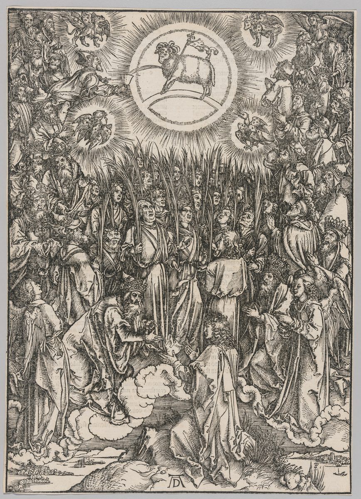

Revelation 14 — The Mister Translation

⚠ Dürer’s woodcut from his Apocalypse series, beside verse 1, the Lamb with the 144,000 and the new song ‘before the throne and before the four living creatures and the elders’ (verse 3). The palm branches belong to the great multitude of Revelation 7:9; Dürer draws the two scenes as one.
_-_Apocalypse,_The_Adoration_of_the_Lamb%E2%80%94The_Hymn_of_the_Chosen_-_2015.580_-_Cleveland_Museum_of_Art.jpg){kind=link}
Translator’s Notes
“And I saw, and behold, the Lamb standing on Mount Zion, and with him a hundred and forty-four thousand who had his name and the name of his Father written on their foreheads.” The chapter answers the one before it: there the beast’s mark went “on their right hand or on their forehead” (Revelation 13:16); here the Lamb’s name and his Father’s are on the foreheads of his own, as promised to the one who overcomes, “I will write on him the name of my God” (Revelation 3:12). Zion is the hill of Jerusalem and, in Hebrews, “Mount Zion and the city of the living God” (Hebrews 12:22) (encyclopedia). The hundred and forty-four thousand were last heard of as “those who were sealed … from every tribe of the sons of Israel” (Revelation 7:4). ⚠ Who they are, readings differ: the whole people of God, the same company as the great multitude “that no one could number” of Revelation 7:9; a faithful remnant of Israel; or, for Jehovah’s Witnesses, a literal number of the anointed who rule with Christ in heaven. The Byzantine text reads “a number of a hundred and forty-four thousand.” The KJV reads “a Lamb stood on the mount Sion … having his Father’s name written in their foreheads,” without “his name and,” which all four Greek editions named on these pages have; the ASV reads “having his name, and the name of his Father, written on their foreheads”; the NWT 1984 reads “the Lamb standing upon the Mount Zion.”
“And I heard a sound out of heaven like the sound of many waters and like the sound of loud thunder; and the sound that I heard was like harpists harping on their harps. And they sing as it were a new song before the throne and before the four living creatures and the elders.” “Many waters” is the voice of the one like a son of man, “his voice like the sound of many waters” (Revelation 1:15); the harps and the new song are those of the elders before the Lamb, “each holding a harp” and “they sing a new song” (Revelation 5:8, 5:9). The Psalms call for it, “Sing to Jehovah a new song” (Psalm 96:1). “As it were” is hōs, which the Byzantine text leaves out. The KJV reads “the voice of harpers harping with their harps”; the NWT 1984 reads “as of singers who accompany themselves on the harp playing on their harps”; the NIV, following the shorter text, reads “And they sang a new song.”
“… could learn the song except the hundred and forty-four thousand, who had been purchased from the earth.” “Purchased” is agorazō, the word of the new song itself, “with your blood you purchased for God persons from every tribe” (Revelation 5:9) (dictionary). The ASV reads “even they that had been purchased out of the earth”; the Douay reads “no man could say the canticle.”
⚠ “These are the ones who were not soiled with women, for they are virgins. These are the ones who follow the Lamb wherever he goes. These were purchased from among humankind as firstfruits to God and to the Lamb, and in their mouth no lie was found; they are blameless.” “Soiled” is molynō, the word of “a few names in Sardis who have not soiled their garments” (Revelation 3:4). Parthenoi, “virgins,” is said of men, and the word stands only here in Revelation (dictionary). Readings differ: a literal celibacy; the purity of an army in holy war, as in “When you go out as a camp against your enemies, you shall keep yourself from anything bad” (Deuteronomy 23:10) and David’s men kept from women (1 Samuel 21:5); or faithfulness pictured as a bride’s, Paul’s “to present you as a pure virgin to Christ” (2 Corinthians 11:2), against the “sexual immorality” that stands for idolatry in this book. “Firstfruits” is aparchē, as in “a kind of firstfruits of his creatures” (James 1:18) (dictionary). “No lie was found” is said of the remnant in Zephaniah 3:13, “nor shall a deceitful tongue be found in their mouth,” and of the servant, “no deceit was in his mouth” (Isaiah 53:9; 1 Peter 2:22). The KJV reads “These are they which were not defiled with women; for they are virgins”; the NIV reads “for they remained virgins”; the TLB reads “For they are spiritually undefiled, pure as virgins.” Tregelles and the Byzantine text add “for” before “they are blameless”; the KJV reads “for they are without fault before the throne of God,” and the Douay “for they are without spot before the throne of God,” with words the four editions do not have; the ASV reads “they are without blemish.”
“And I saw another angel flying in midheaven, having eternal good news to proclaim to those who dwell on the earth, and to every nation and tribe and tongue and people, saying with a loud voice, ‘Fear God and give him glory, because the hour of his judgment has come; and worship the one who made the heaven and the earth and sea and springs of water.’” “Flying in midheaven” is the eagle’s place in Revelation 8:13; mesouranēma, “midheaven,” stands in three verses, all in Revelation (dictionary). “Good news” is euangelion, as in “The beginning of the good news of Jesus Christ” (Mark 1:1) (dictionary), and the noun stands only here in Revelation; the verb was used at Revelation 10:7, “as he announced good news to his own slaves the prophets.” The message is to fear and worship the Creator, in the words of the commandment, “in six days Jehovah made the heavens and the earth, the sea” (Exodus 20:11), and of Paul at Lystra, “a living God, who made the heaven and the earth and the sea” (Acts 14:15). The Byzantine text reads “Fear the Lord”: the Douay reads “Fear the Lord, and give him honour”; the KJV reads “Fear God, and give glory to him; for the hour of his judgment is come.” The KJV reads “the everlasting gospel”; the ASV reads “having eternal good tidings to proclaim”; the NWT 1984 reads “everlasting good news to declare as glad tidings.”
⚠ “And another, a second angel, followed, saying, ‘Fallen, fallen is Babylon the great, who has made all the nations drink of the wine of the fury of her sexual immorality.’” The cry is Isaiah’s, “Fallen, fallen is Babylon” (Isaiah 21:9), and the cup is Jeremiah’s, “Babylon was a golden cup in the hand of Jehovah, making all the earth drunk” (Jeremiah 51:7); “Babylon the great” is Nebuchadnezzar’s boast, “Is not this Babylon the great, which I myself have built” (Daniel 4:27, numbered 4:30 in English Bibles). The past tense announces as done what chapters 17 and 18 will describe. Babylōn stands in six verses of Revelation, and this is the first (encyclopedia). Which city the name covers, readings differ: Rome, as in “She who is in Babylon … greets you” (1 Peter 5:13); Jerusalem; or every power that sets itself against God. “The wine of the fury” joins two things: the wine she gives the nations and the fury, thymos, it brings on them (dictionary), as in “Take this cup of the wine of fury from my hand” (Jeremiah 25:15). “Sexual immorality” is porneia, in this book the figure of idolatry (dictionary). The Byzantine text has “fallen” once. The ASV reads “Fallen, fallen is Babylon the great”; the KJV reads “Babylon is fallen, is fallen, that great city”; the NWT 1984 reads “the wine of the anger of her fornication”; the NIV reads “the maddening wine of her adulteries.”
“If anyone worships the beast and its image, and receives a mark on his forehead or on his hand, he too will drink of the wine of the fury of God, mixed unmixed in the cup of his wrath.” The beast, its image and its mark are those of Revelation 13:14–17 (dictionary). “Mixed unmixed” keeps the Greek’s own clash. Kerannymi is to mix wine for drinking, ordinarily with water; akratos, “unmixed,” is wine at full strength, and it stands nowhere else in the New Testament (dictionary): the cup is poured out for drinking, and nothing has softened it. “Fury” is thymos and “wrath” is orgē, as at Revelation 6:16 (dictionary); the Babylon who made the nations drink now drinks God’s cup. The KJV reads “poured out without mixture into the cup of his indignation”; the ASV reads “which is prepared unmixed in the cup of his anger”; the Douay reads “which is mingled with pure wine”; the NIV reads “poured full strength.”
⚠ “And he will be tormented with fire and sulfur in the presence of holy angels and in the presence of the Lamb. And the smoke of their torment goes up forever and ever, and they have no rest day or night, those who worship the beast and its image, and anyone who receives the mark of its name.” “Fire and sulfur” is the judgment on Sodom, “Jehovah rained on Sodom and on Gomorrah sulfur and fire” (Genesis 19:24), whose smoke Abraham saw “like the smoke of a kiln” (Genesis 19:28). “Its smoke shall go up forever” is said of Edom laid waste, “night and day it shall not be quenched” (Isaiah 34:10). “No rest day or night” turns round what was said of the four living creatures, who “have no rest day or night” from praise (Revelation 4:8). “Tormented” is basanizō (dictionary). Whether the verses describe a torment without end, or a judgment whose smoke stands as a lasting memorial, as with Sodom and Edom, readings differ, and the question is the same one that hangs on “eternal punishment” at Matthew 25:46. The KJV reads “the smoke of their torment ascendeth up for ever and ever”; the NWT 1984 reads “day and night they have no rest”; the TLB reads “have been tattooed with the code of his name.”
“Here is the endurance of the holy ones, those who keep the commandments of God and the faith of Jesus.” “Here is the endurance” repeats Revelation 13:10, “Here is the endurance and the faith of the holy ones” (dictionary), and “keep the commandments of God” repeats Revelation 12:17. “The faith of Jesus” can be faith in Jesus or Jesus’s own faithfulness, kept by those who follow him; readings differ. The KJV reads “Here is the patience of the saints: here are they that keep the commandments of God, and the faith of Jesus”; the NWT 1984 reads “Here is where it means endurance for the holy ones”; the NIV reads “remain faithful to Jesus,” choosing one reading.
“And I heard a voice out of heaven saying, ‘Write: Blessed are the dead who die in the Lord from now on.’ ‘Yes,’ says the Spirit, ‘so that they will rest from their labors, for their works follow with them.’” Makarios, “blessed,” stands in seven verses of Revelation; this is the second, after “Blessed is the one who reads aloud” (Revelation 1:3), and the last is at 22:14 (Revelation 22:14) (dictionary). ⚠ “From now on,” ap’ arti, can belong to “die in the Lord” or to the Spirit’s “Yes”; the Greek has no punctuation to decide it. The KJV reads “Blessed are the dead which die in the Lord from henceforth: Yea, saith the Spirit”; the Douay reads “Blessed are the dead, who die in the Lord. From henceforth now, saith the Spirit.” The rest answers the “no rest day or night” of verse 11. Westcott-Hort, Tregelles and the 28th Nestle-Aland edition read the future, “they will rest,” after “so that”; the Byzantine text reads the more usual subjunctive. The NWT 1984 reads “Happy are the dead who die in union with [the] Lord from this time onward”; the NIV reads “for their deeds will follow them”; the TLB reads “At last the time has come for his martyrs to enter into their full reward.”
“And I saw, and behold, a white cloud, and seated on the cloud one like a son of man, having on his head a golden crown and in his hand a sharp sickle.” “One like a son of man” is Daniel’s figure coming “with the clouds of heaven” (Daniel 7:13), and the figure John saw among the lampstands (Revelation 1:13) (dictionary). The Greek has no article: “a son of man.” Westcott-Hort and the 28th Nestle-Aland edition put “son” in the accusative after “like,” Tregelles and the Byzantine text in the dative, a matter of grammar only. Whether this figure is Christ or an angel, since the next verses have angels giving him orders, readings differ. “Sickle” is drepanon, which stands in seven verses (dictionary). Six of them are in this chapter; the other is the seed growing by itself, “immediately he sends in the sickle, because the harvest has come” (Mark 4:29). The KJV reads “one sat like unto the Son of man,” with a capital; the ASV reads “one sitting like unto a son of man”; the TLB reads “someone sitting on it who looked like Jesus.”
“And another angel came out of the temple, crying with a loud voice to the one seated on the cloud, ‘Send your sickle and reap, because the hour to reap has come, because the harvest of the earth is dry.’ And the one seated on the cloud cast his sickle on the earth, and the earth was reaped.” The command is Joel’s, “Send the sickle, for the harvest is ripe; come, tread, for the winepress is full” (Joel 3:13), which joins the two harvests of this chapter in one verse. “Is dry” is exēranthē, “has dried,” grain left standing until it is ready, or past ready. Jesus said, “The harvest is the end of the age, and the reapers are angels” (Matthew 13:39). Whether this first harvest gathers the faithful and the vintage that follows is the judgment, or both are judgment, readings differ. The KJV reads “Thrust in thy sickle, and reap”; the ASV reads “Send forth thy sickle, and reap”; the NWT 1984 reads “the harvest of the earth is thoroughly ripe.”
⚠ “And another angel came out of the temple that is in heaven, he too having a sharp sickle. And another angel, from the altar, the one who has authority over the fire — and he called with a loud voice to the one who had the sharp sickle.” The second sentence has no verb before “and he called” in the Greek printed here: its editor, Michael Holmes, follows a reading Westcott-Hort gave in the margin, while Westcott-Hort, Tregelles, the 28th Nestle-Aland edition and the Byzantine text all read “came out from the altar.” This translation keeps the broken sentence. The altar and its fire are those of Revelation 8:3–5, where an angel “filled it with fire from the altar, and threw it to the earth” (dictionary). The Byzantine text reads “with a loud cry.” The KJV reads “And another angel came out from the altar, which had power over fire; and cried with a loud cry”; the NIV reads “who had charge of the fire”; the TLB reads “the angel who has power to destroy the world with fire.”
“Send your sharp sickle and gather the clusters of the vine of the earth, because its grapes are ripe. And the angel cast his sickle into the earth and gathered the vintage of the vine of the earth, and cast it into the great winepress of the fury of God.” Lēnos, “winepress,” stands in four verses (dictionary). One is the householder who “dug a winepress” in Jesus’s parable (Matthew 21:33); one is Revelation 19:15. The picture is Isaiah’s, “I have trodden the winepress alone” (Isaiah 63:3). “Winepress” is feminine in Greek and “the great” is masculine, an unexplained break in the grammar; the ASV keeps the adjective apart, “cast it into the winepress, the great winepress, of the wrath of God,” and the KJV reads “cast it into the great winepress of the wrath of God.”
“And the winepress was trodden outside the city, and blood came out of the winepress up to the horses’ bits, for a thousand six hundred stadia.” “Outside the city” does not name the city; the great city of Revelation 11:8 is “where also their Lord was crucified,” and Hebrews says Jesus “suffered outside the gate” (Hebrews 13:12). “Bits” is chalinos, as in “we put the bits into the mouths of horses” (James 3:3). A stadion was about 185 metres (dictionary), so 1,600 stadia is some 300 kilometres, about 185 miles; the city of Revelation 21:16 measures twelve thousand. Readers have noted that 1,600 is forty times forty, and four times four hundred; whether the number is meant as a square of the land or as sheer size, readings differ. The KJV reads “even unto the horse bridles, by the space of a thousand and six hundred furlongs”; the NIV reads “1,600 stadia”; the TLB reads “blood flowed out in a stream 200 miles long.”
Patterns worth carrying forward
What this chapter answers. Chapter 13 put the beast’s mark on hand and forehead; this one puts the Lamb’s name and his Father’s on the foreheads of the 144,000, and then sends three angels with three messages, eternal good news, the fall of Babylon, and the cup for those who took the mark. It ends in two harvests, grain and grapes, the first reaped by one like a son of man and the second trodden in the winepress of the fury of God.
Where this translation keeps the exact words: “purchased,” as at 5:9; “soiled,” as at 3:4; “virgins,” with the readings in the note; “firstfruits”; “flying in midheaven,” as at 8:13; “eternal good news”; “fury” for thymos and “wrath” for orgē; “sexual immorality”; “mixed unmixed”; “no rest day or night,” as at 4:8; “Here is the endurance of the holy ones,” as at 13:10; “a son of man,” without the article; “is dry”; the verbless “another angel, from the altar”; “bits,” as at James 3:3; and “stadia.”
Echoes paid. The mark on the forehead of Revelation 13:16, answered by the Lamb’s name, as promised at the close of Revelation 13; the 144,000 of Revelation 7:4; the new song and purchased of Revelation 5:9; the name written of Revelation 3:12; midheaven from Revelation 8:13; the altar fire of Revelation 8:5; the endurance of Revelation 13:10; the fury of Revelation 12:12; and one like a son of man from Revelation 1:13.
Echoes planted. Babylon’s fall, told at length in chapters 17 and 18; the cup of the fury of God, handed to the angels in seven golden bowls at Revelation 15:7 and poured out in chapter 16; and the winepress trodden by the rider on the white horse at 19:15.
Next in this book: Revelation 15, already on these pages. Seven angels with the seven last plagues; a sea of glass mixed with fire; the conquerors singing “the song of Moses the slave of God and the song of the Lamb”; and the temple filled with smoke from the glory of God.